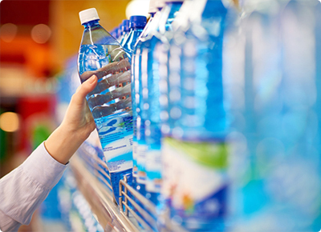
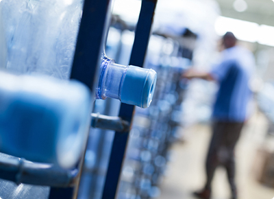

- For Orders 9344118899
- gurussaqua@gmail.com
- Monday to sunday 6 AM to 9 PM
About Us
Water Quality and Information
GURU Packaged Drinking Water as defined by the BIS standard IS 14543:2004. Guru Packaged drinking Water comes with the assurance of safety from SS Aqua Enterprise, That is why we introduced Guru with reverse-osmosis along with the latest technology to ensure purity of water. Because we believe that right to pure, Safe drinking water is fundamental. From the incoming water to finished pure water,strict engineering design and robot process control are instrumental in ensuring the consistent purity of Guru Packed drinking water. Our in plant testing and external, third party testing on 20+ parameter's help in assuring we meet and exceed the water quality standards set forth by BIS. We treat the water for Guru to meet the consistent standards the our consumers desire and our purification process is designed so that we can meet these as strict standards.
What is Reverse Osmosis ?
Reverse Osmosis works by using a high pressure pump to increase the pressure on the salt side of the RO and force the water across the semi-permeable RO membrane, leaving almost all (around 95% to 99%) of dissolved salts behind in the reject stream.Reverse osmosis removes contaminants from unfiltered water, or feed water, when pressure forces it through a semipermeable membrane. Water flows from the more concentrated side (more contaminants) of the RO membrane to the less concentrated side (fewer contaminants) to provide clean drinking water. The fresh water produced is called the permeate. The concentrated water left over is called the waste or brine.A semipermeable membrane has small pores that block contaminants but allow water molecules to flow through. In osmosis, water becomes more concentrated as it passes through the membrane to obtain equilibrium on both sides. Reverse osmosis, however, blocks contaminants from entering the less concentrated side of the membrane. For example, when pressure is applied to a volume of saltwater during reverse osmosis, the salt is left behind and only clean water flows through.
Guru System Reverse Osmosis work ?
A reverse osmosis system removes sediment and chlorine from water with a prefilter before it forces water through a semipermeable membrane to remove dissolved solids. After water exits the RO membrane, it passes through a postfilter to polish the drinking water before it enters a dedicated faucet. Reverse osmosis systems have various stages depending on their number of prefilters and postfilters.
Stages of RO systems
The RO membrane is the focal point of a reverse osmosis system, but an RO system also includes other types of filtration. RO systems are made up of 3, 4, or 5 stages of filtration. Every reverse osmosis water system contains a sediment filter and a carbon filter in addition to the RO membrane. The filters are called either prefilters or postfilters depending on whether water passes through them before or after it passes through the membrane.
Each type of system contains one or more of the following filters:
Carbon filter: Reduces volatile organic compounds (VOCs), chlorine, and other contaminants that give water a bad taste or odor Semi-permeable membrane: Removes up to 98% of total dissolved solids(TDS){kind=link}
When water first enters an RO system, it goes through prefiltration. Prefiltration typically includes a carbon filter and a sediment filter to remove sediment and chlorine that could clog or damage the RO membrane. Next, water goes through the reverse osmosis membrane where dissolved particles, even too small to be seen with an electron microscope, are removed. After filtration, water flows to the storage tank, where it is held until needed. A reverse osmosis system continues to filter water until the storage tank is full and then shuts off. Once you turn on your drinking water faucet, water comes out of the storage tank through another postfilter to polish drinking water before it gets to your faucet.
{kind=link}
Importance of Water
{kind=link}

Importance of Packed drinking water

Our Purification Process
Certification
SS Aqua Enterprises (GURU Packaged Drinking Water) as defined by FSSAI standard
SS Aqua Enterprises (GURU Packaged Drinking Water) as defined by the ISO standard 22000:2018